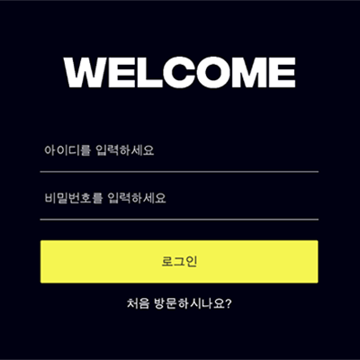
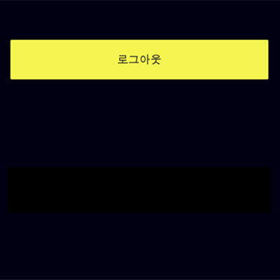
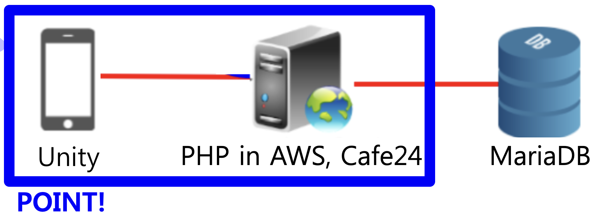
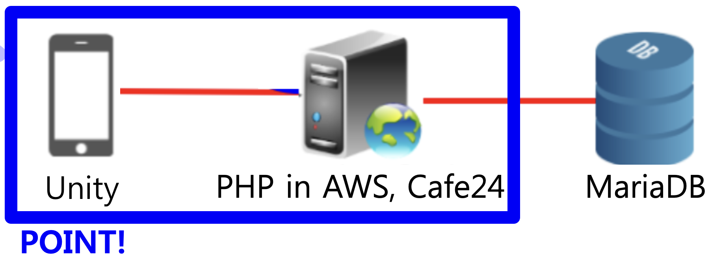

구현 기능
|  |
로그인 기능 아이디와 비밀번호를 입력해서 로그인 합니다. |

|
회원가입 기능 아이디, 비밀번호, 이름, 성별을 입력해서 회원가입 합니다. |

|
정보 조회 기능 해당 회원의 이름을 보여줍니다. |
|  |
로그아웃 기능 로그아웃 합니다. |
배경과 목적
요즘 사람들은 스마트폰을 굉장히 많이 사용하므로, 창의적인 스마트폰 게임을 만들어서 사람들한테 서비스를 제공하기 위해, 게임 개발자가 될 것에 대비하기 위해, 게임에 필요한 시스템을 제작하게 되었습니다.
요즘 사람들은 스마트폰을 굉장히 많이 사용하므로, 창의적인 스마트폰 게임을 만들어서 사람들한테 서비스를 제공하기 위해, 게임 개발자가 될 것에 대비하기 위해, 게임에 필요한 시스템을 제작하게 되었습니다.
배운 점
- AWS와 Cafe24에서 서버를 구축한 후 운영하는 법을 알게 되었습니다.
- 상황에 따라 PHP에서 HTTP Response를 보내는 법을 알게 되었습니다.
- PHP로 Unity 서버를 구축하는 법과 MariaDB로 데이터베이스를 구축해서 연동하는 법을 알게 되었습니다.
- Unity에서 HTTP Request를 보내는 법을 알게 되었습니다.
- Unity로 클라이언트를 구현하는 법을 알게 되었습니다.
진행 절차
- Unity로 클라이언트 구현하였습니다. 이때, HTTP Request를 보내도록 하였습니다.
- PHP로 서버를 구축하였고, MariaDB로 데이터베이스를 구축한 다음 연동하였습니다.
- AWS와 Cafe24에 서버를 띄웠습니다. 그러나 AWS에 띄울 때, 데이터베이스에 접근 조차 이루어지지 않는 오류가 발생했습니다. 그래서, MariaDB 유저를 새로 만든 후, 이 유저한테 모든 권한을 부여하였고 서버에서 사용하였습니다. 이렇게 해서 데이터베이스에 접근할 수 있도록 하였습니다.
- 이렇게 해서 원하는 프로그램을 구현할 수 있었습니다.
역량 강화를 위해 가장 노력한 점
Unity에서 HTTP Request 전송 및 AWS와 Cafe24에 서버 띄우기
Unity에서 HTTP Request 전송 및 AWS와 Cafe24에 서버 띄우기
전체 구조


사용 기술
Unity, PHP, AWS, Cafe24
Unity, PHP, AWS, Cafe24
개발 환경
Unity 2020.1.9f1, Terminal in Mac, FileZilla, HeidiSQL, PuTTY
Unity 2020.1.9f1, Terminal in Mac, FileZilla, HeidiSQL, PuTTY
부연 설명